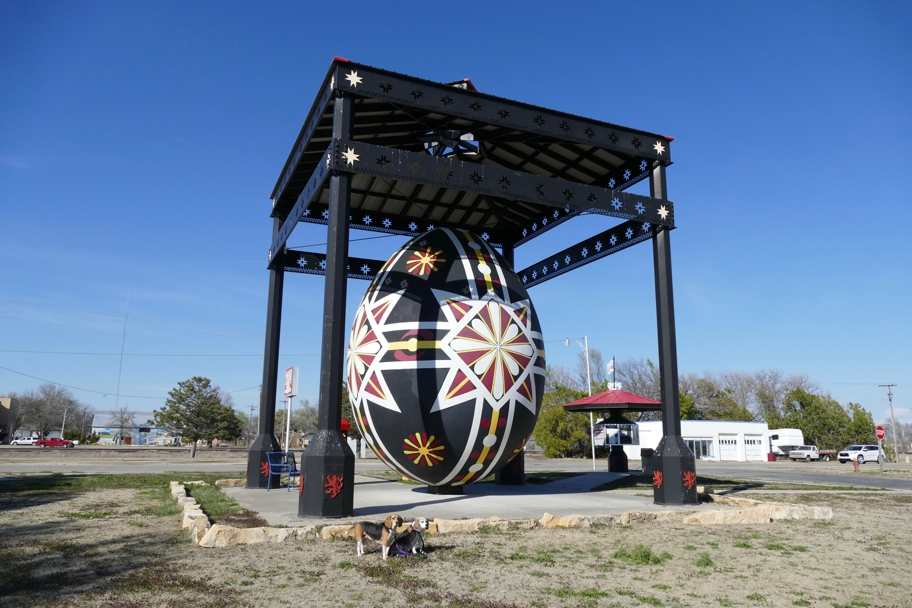

We stumbled on this astonishing artifact while making our way south from Lucas. Note also the limestone border. The nearby signage told us that the film "Paper Moon" had been shot in a hotel here. We watched it; we can't confirm that it had been shot in Wilson, but it does convey the feel of this part of Kansas.
Halley Beagle Kansas Wallace Beagle Wilson